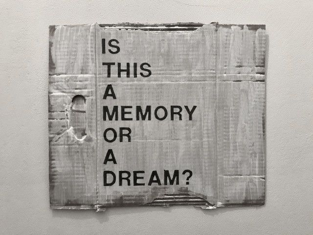
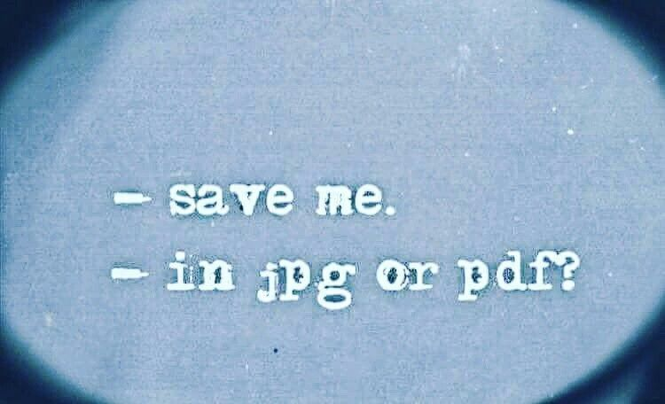
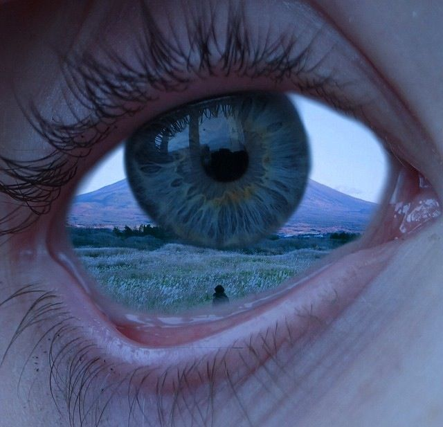
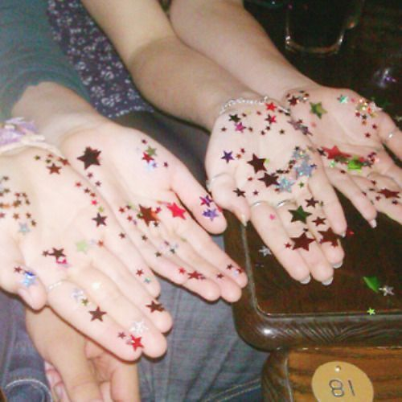
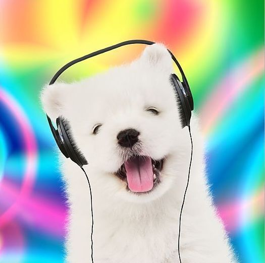
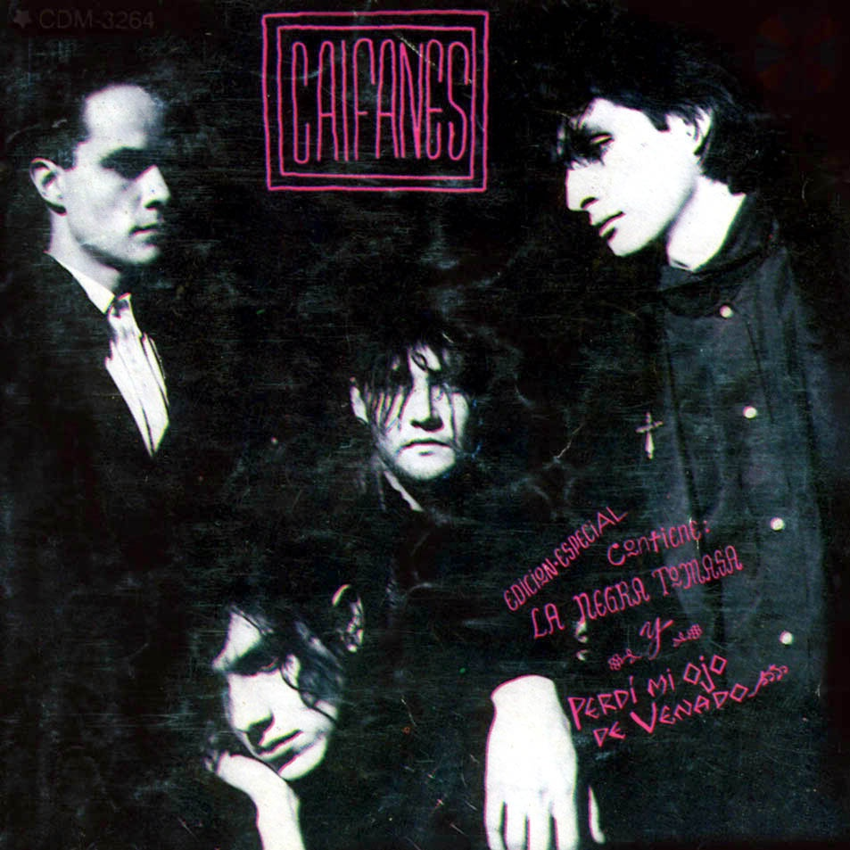
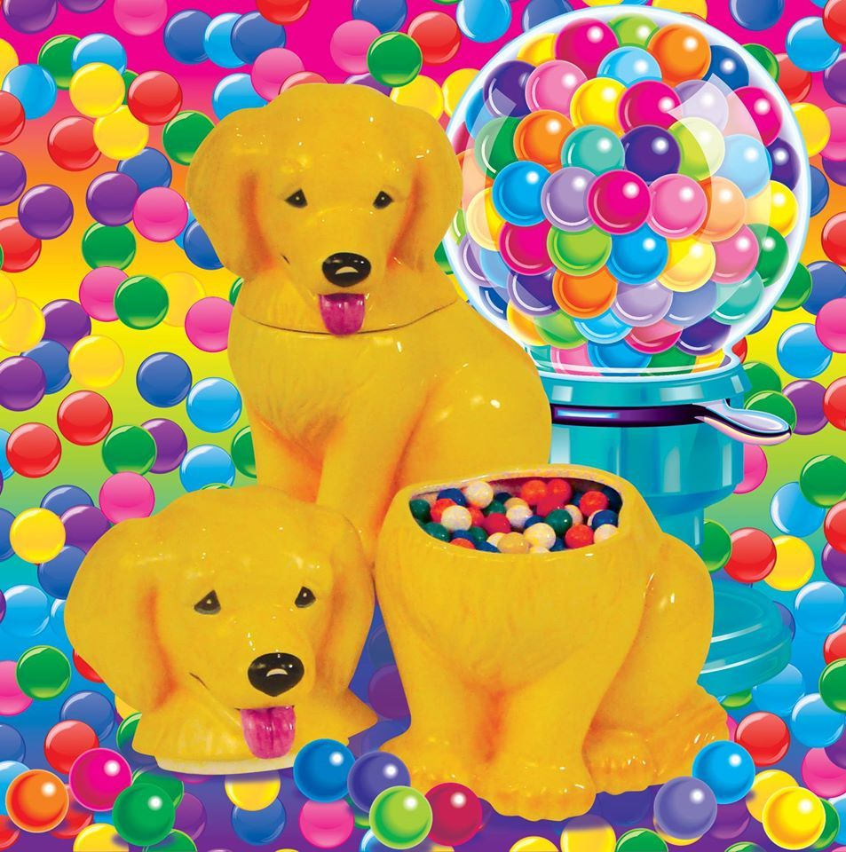
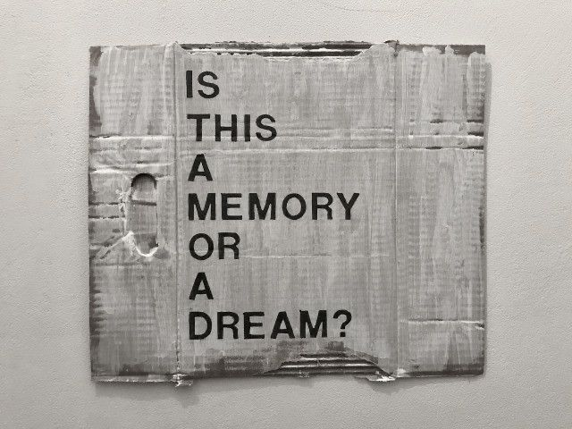
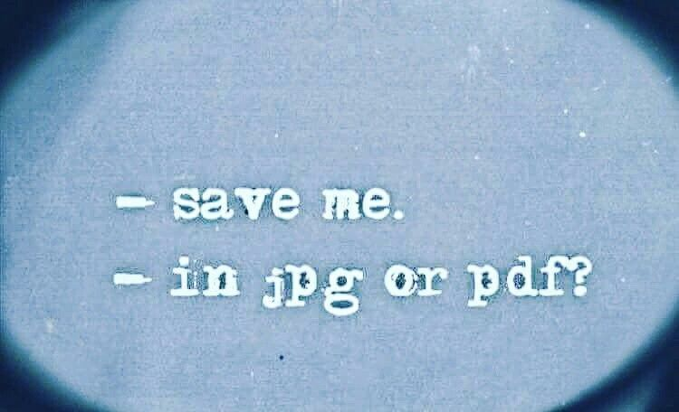
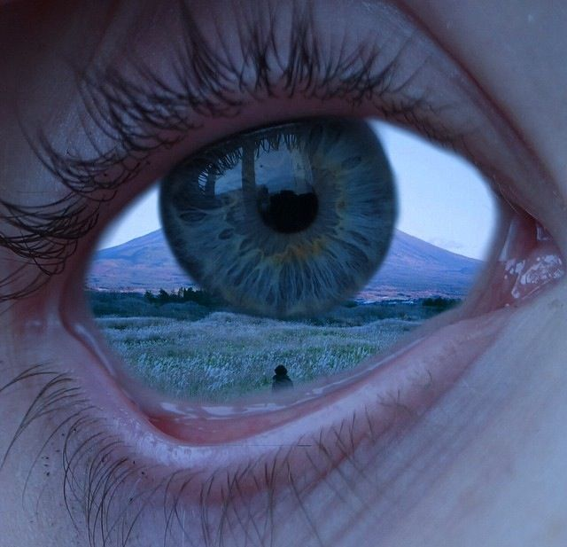
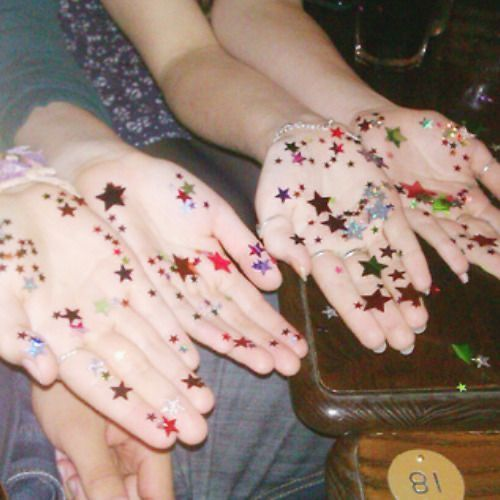
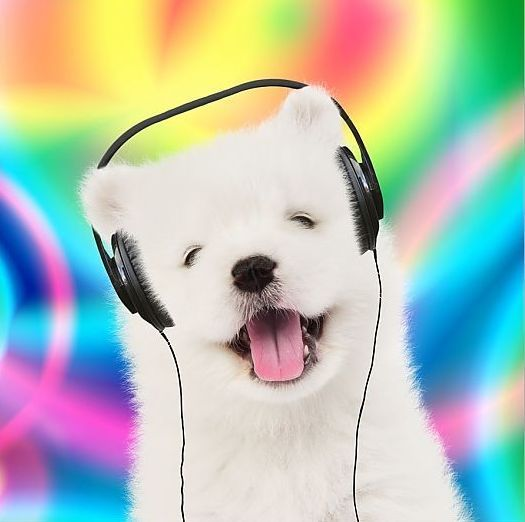
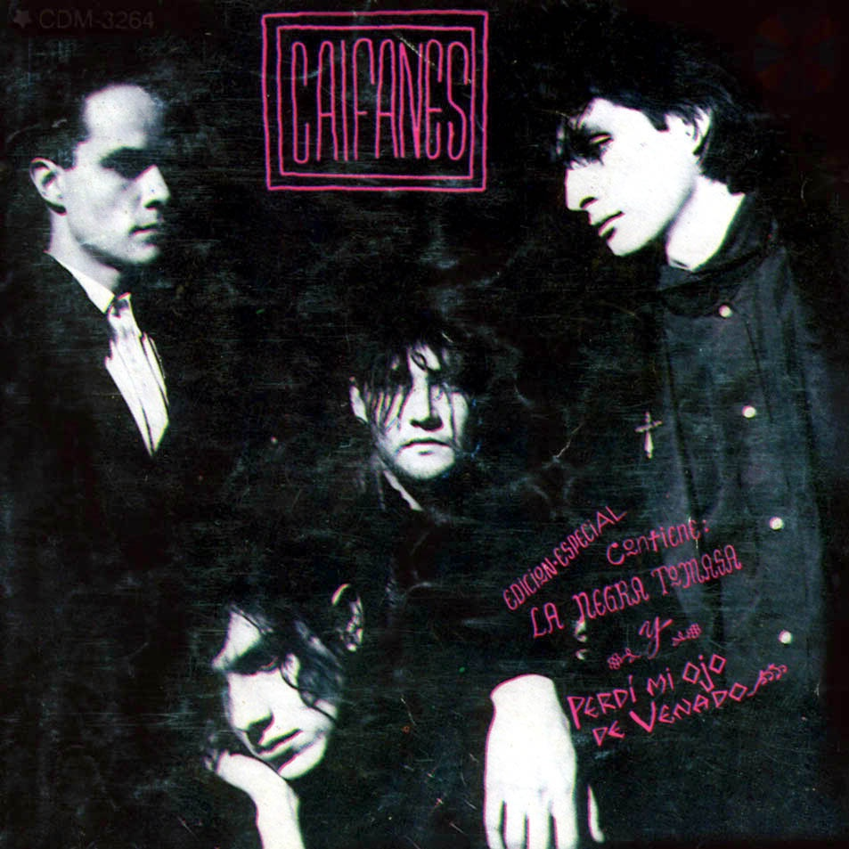
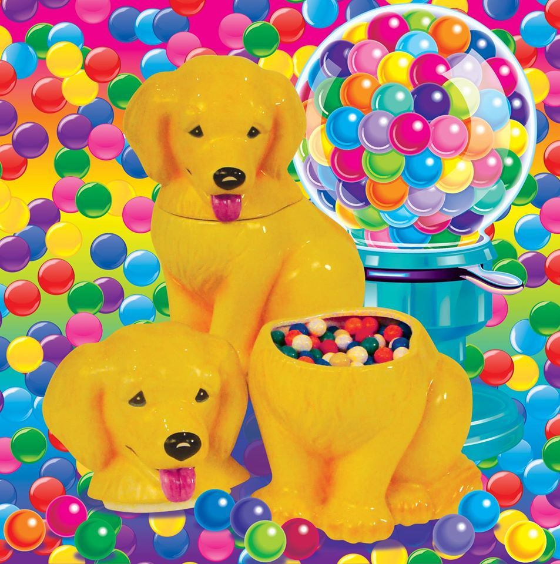
 Místico, Misticky, Chocomilk.
Místico, Misticky, Chocomilk. Uno de mis grandes amores que partió en 2021 justo en mi peor momento.
Te extraño y te pienso con frecuencia.
 Freddy, Dorito loco.
Freddy, Dorito loco. Me encantaba cómo solías brincar toda la tarde alrededor de los árboles; ahuyentabas los pájaros por más de 1 hora.
El mundo es cruel. Eras muy hiperactivo pero siempre te amé y te sigo amando.
 Coco, Cocowahs, Coquito.
Coco, Cocowahs, Coquito. Muy salvaje para mí, pero hermoso y fiel.
Te hiciste muy vago pero aún así te quería.
Desearía que hubieras vuelto.
 Rocko, Pepo, Pepas, Pipo.
Rocko, Pepo, Pepas, Pipo.Sigues aquí y eso me alegra de verdad. Te has vuelto mi amigo fiel, mi consuelo. Mi todo.
Quédate muchos años más.
 Negro.
Negro. Yoyo te rescató de la calle pero no pudimos salvarte de la malicia humana.
Me dueles todavía. Cada día del estudiante te recuerdo porque ese día me dejaste.